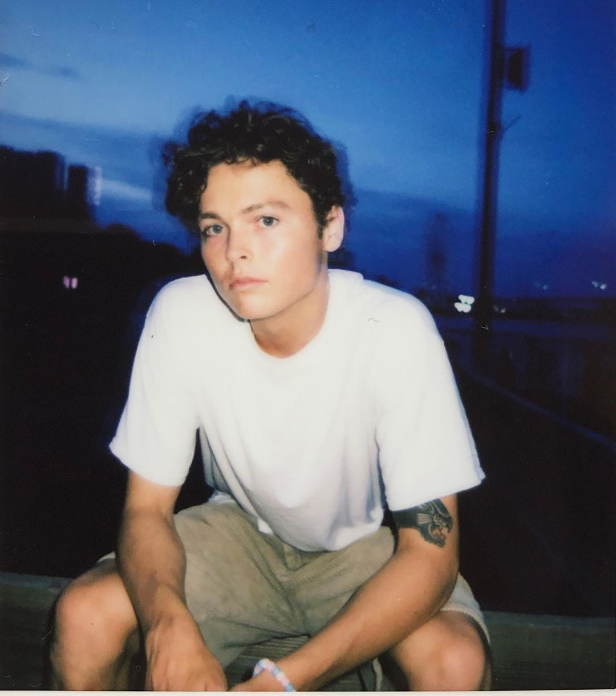

Who is the best?
Date: 10/13/24 | Author: Luke Twigg
In my opinion, the greatest skateboarder of all time would be Tony Hawk. He is like the Michael Jordan of the sport. He has been a professional skateboarder for a long time, because of that he has been very influential on how the sport has evolved over the last several decades. Some examples are inventing tricks, completing tricks in competition for the first time, fashion influences, and more. He is a very decorated athlete. He has won numerous skate contests at a professional level, such as X-Games. He also has many sponsors that endorse him and ultimately have created a lot of success for those companies, such as Birdhouse skateboards. In addition to skateboarding, he is also responsible for creating a very popular skateboarding video game series using his name. Many people outside of the sport enjoy the game, ultimately expanding the knowledge of the sport overall. Lastly, he most likely has the highest net worth in comparison to any other skateboarder because of his success (slight flex). Because of everything listed above, in my opinion he is the best of all time. P.S., the image included in this post is an image of me with Tony Hawk about 10 years ago, I was so excited to meet him because he is the GOAT, the greatest of all time.
Who is my favorite?
Date: 10/13/24 | Author: Luke Twigg

My favorite skater is Zach Saraceno. He is a young skater from California and his sponsors are Spitfire, Adidas, King Skateboards, Hardies, and more. I think that he is my favorite mainly because of his clothing style and the skateboarding videos he has produced. In terms of his style, he always looks clean and very coordinated. He chooses very tame colors that do not clash a lot and are very appealing to the eye. He also wears some sort of jewelry in order to compliment the outfits but not be too overpowering. I try to dress like him or as close as I can in order to mimic the minimalist streetwear. In terms of his skateboarding, I am very interested in the clips that he has produced and the videos he has been a part of (that companies have released). All of the tricks that he does come off as effortless, like he isn’t even trying. But because of my experience as a skater, I know that what he accomplishes is very very hard and should look more difficult than it does. He also has a very diverse trick choice, it is very rare that you will see a duplicated trick within a video that he is a part of. Because he is so diverse and very comfortable on his board, it is enjoyable to watch him and he is very influential when I decide what tricks I want to try when I go skate. I hope I can meet him someday…